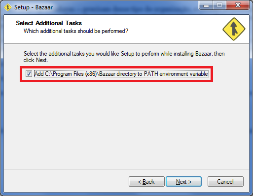
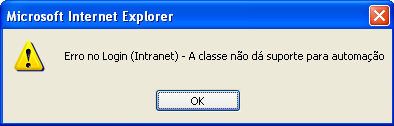
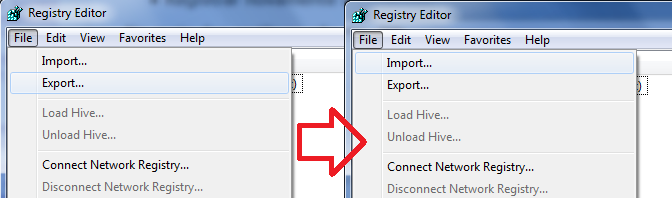
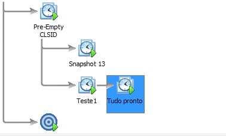
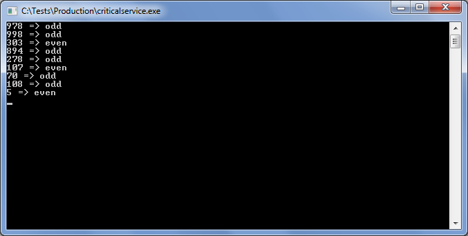
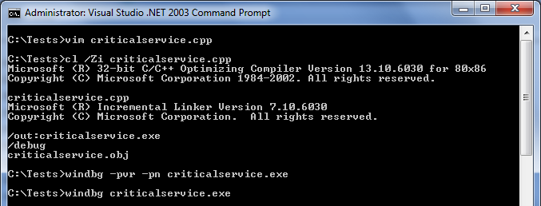
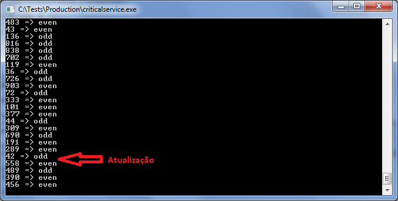

2010-11-01 tag_mostra tag_movies ^
Se fosse resumir essa ficção-científica, diria que ela começa como Aliens - O Resgate e termina como Matrix. De fato, muitas características do longa nos lembra esses dois filmes. Porém, longe de se igualar em qualidade narrativa, este cai no lugar comum de passeios contemplativos pelo cenário com trilhas sonoras igualmente batidas.
Pautado em um grande mistério envolvendo o destino de seus passageiros, o roteiro escrito a 8 mãos flerta perigosamente com seus segredos usando uma fotografia nitidamente surreal ao mostrar no início uma bela mulher passeando por um campo de trigo com uma trilha sonora feliz, representando exatamente o oposto do que vemos a seguir: uma fria e gigantesca nave no espaço vazio. Há um esmero acima da média com a direção de arte que se preocupa com detalhes como o desenho dos equipamentos utilizando kanjis orientais e denunciando a origem de sua fabricação, o que cria uma âncora com a realidade de uma China em evolução crescente.
O fato da fotografia na primeira tomada ser tão bela contrapõe-se de maneira gritante com a fotografia do resto do filme, submergida em um escuro deprimente, arrastado por um figurino de roupas desgastadas, comprovando mais uma vez os tempos difíceis que vive a humanidade. Não só isso: o tédio impera no espaço. Quando não estão congelados para economizar tempo de vida, os passageiros nitidamente passam muito tempo sem fazer absolutamente nada de construtivo, como o cubo mágico resolvido na mesa da médica da equipe denuncia. Ao mesmo tempo, a direção previsível de Ivan Engler e Ralph Etter cria um suspense tipicamente forçado com o uso de uma trilha sonora sugestiva e cortes mais rápidos de cena, um lugar comum que não oferece mais escape de boas produções: o espectador já sabe o que o espera e se entedia disso.
No início desse texto dizia que o filme lembrava Aliens. A própria autópsia do comandante morto pela queda já remete ao oitavo passageiro, e a criança encontrada remete à sua continuação. E é interessante que ao mesmo tempo em que a médica corre perigo ainda estamos mais preocupados com o mistério na nave que com a vida dela, o que demonstra como a artificialidade do roteiro faz par com uma direção morna que não se preocupa, por exemplo, com a empatia da protagonista para o espectador.
A despeito dos cortes incessantes que repetem a fórmula do suspense durante toda a narrativa, não há na história um senso simples de continuidade, deixando o espectador mais perdido que interessado nos cortes ríspidos de câmera. Cada sub-conclusão é fechada pelo mesmo fade-out, outro recurso repetido à exaustão até a revelação da verdade, onde há uma mudança radical que poderia ser o trampolim para um pouco de ação intelectual.
Infelizmente o final se importa mais em muitas delongas e o batidíssimo artifício do tempo se esgotando. Ainda bem que eventualmente acaba.
2010-11-01 tag_mostra tag_movies ^
A primeira coisa que nota-se em Cirkus Columbia é a deslumbrante fotografia. Criada de forma magistral, torna a história um épico instantâneo pelo simples fato de reapresentar ao mundo um país anteriormente arrasado pela guerra, onde são aproveitadas não só os quadros da tela larga, mas as luzes também.
Logo notamos que os enquadramentos são sempre econômicos e o diretor sempre escolhe os que melhor consegue retratar a interação entre todos os personagens da cena.
O filme é uma composição complexa, tanto dos personagens envolvidos quanto a situação da própria cidade após a queda do muro de Berlim. Por abordar tudo isso utilizando a visão intimista dos personagens, contudo, o diretor Danis Tanovic consegue transpor a barreira histórica e criar algo mais do que uma descrição do momento da história da Bósnia: esse mesmo momento, mas vivido por pessoas comuns.
2010-11-01 tag_mostra tag_movies ^
Esse documentário conta a história de quatro amigas que estão internadas em uma espécie de abrigo para filhas que foram abandonadas por suas famílias. Cada uma delas fala na sua vez sobre sua história, e conseguimos identificar facilmente a personalidade de cada uma: a que tem pena de si, a durona e irritada, a complicada e, por fim, a conformada. É ela que veremos frente a frente com os pais.
É possível entender o absurdo da situação dessas mulheres através do questionário do instituto, onde são feitas diversas perguntas atípicas, como se a pessoa já frequentou algum hospício ou se foi molestada quando criança. Fica óbvio que, após, darem entrada no local, elas vivem presas, pois os muros possuem arame farpado, janelas possuem grades e muitas nem vêm a claridade exterior dias inteiros.
O ponto alto do documentário é a discussão do pai que visita a última menina entrevistada. Na concepção dele, a menina é uma desvirtuada sem solução. Ele ignora totalmente a possibilidade de uma sociedade diferente da idealizada por ele, onde as mulheres devem se esconder, ser submissas e nunca fazer coisas como usar maquiagem.
Muito embora tenha momentos emocionantes, a narrativa não consegue gerar uma grande empatia pelas meninas, mas apenas pela sua causa. Nesse ponto, ele é tão efetivo quanto A Flor do Deserto, só que este último conta uma história mais interessante em tom ficcional.
2010-11-01 tag_mostra tag_movies ^
Começamos essa história sobre um jogador de vídeo-games profissional dentro do jogo que este é especialista. Esse artifício será usado mais uma ou duas vezes e transportado para o pseudo-romance que este viverá com uma oriental da cidade para onde vão disputar o campeonato, só que dessa vez o ambiente virtual é o Second Life, lugar feito para conhecer pessoas. Com esse tipo de simbolismo é que somos levados a uma história que poderia ser fascinante, por nos dar a presença de dois personagens igualmente interessantes, bastando para isso que tenhamos um Bill Murray e uma Scarlett Johansson nos papéis principais e teríamos um Encontros e Desencontros 2, menos profundo mas igualmente interessante.
# Então você ainda não usa controle de fonte?
2010-11-02 tag_coding ^
Graças aos antigos SCMs, muitos programadores hoje em dia evitam ter que configurar um controle de fonte mínimo para seus projetos. E por um bom motivo: temos que programar e resolver problemas reais no dia-a-dia e não ficar configurando servidores de controle de fonte e lidando com conflitos na calada da noite. Isso vale tanto para o pessoal do Windows e o seu Visual Source Safe (eu que o diga) quanto para o pessoal do Unix/Linux e seu CVS ;aliás, hoje o pesadelo de ambos foi substituído pelo SubVersion: um pesadelo light.
Não há nada de errado nisso. Projetos robustos com uma equipe moderada ¿ 5 a 10 programadores ¿ precisam desse tipo de organização, e tornam a resolução dos problemas do dia-a-dia mais problemática **sem** esse controle. A questão reside para o programador solitário ou a equipe minúscula ¿ 2 a 4 programadores. Esses geralmente questionam o custo-benefício de terem o trabalho de configurar e manter mais um sistema. Além disso, isso implica em uma mudança de grandes proporções em cada membro da equipe: uma **mudança cultural**.
Portanto, a primeira decisão que deve ser tomada pelo programador que quer mudar as coisas é instalar um controle de fonte moderno para seus projetos caseiros. Quando digo moderno, digo distribuído.Distribuído porque 1) é possível começar desde já com três comandos simples, 2) quando alguém copia a pasta do projeto está levando todo o histórico junto e 3) pastas duplicadas são branches distintos que podem interagir no futuro.
Os três comandos simples não são nada do outro mundo: criar o repositório, adicionar arquivos e fazer **commit**.
<blockquote>_Dica: Um commit é uma maneira de dizer ao controle de fonte: "já modifiquei o que tinha pra modificar, então mande tudo que tenho de novo para o controle". _</blockquote>
Tanto faz qual controle você pretende usar. No meu exemplo usarei o Bazaar, que é a ferramenta que uso no dia-a-dia com minha pequena equipe e serve bem para programadores solitários também. Basicamente para ter o Bazzar instalado basta baixá-lo, next next e finish.

_Marcar para usar o PATH pode ser uma boa pra quem é fã de linha de comando._
Apesar de existirem firulas gráficas, gosto de usar o Bazaar na linha de comando porque faz você pensar direito antes de fazer commits, mas esteja livre para experimentar a maneira que achar melhor.
Isso vale para qualquer projeto que você esteja trabalhando. Pela linha de comando, navegue até o diretório do projeto. Digite os comandos abaixo seguidos de enter:
1. bzr init
2. bzr add
3. bzr commit -m "Primeiro commit no controle de fonte"
Pronto! Você está oficialmente com seu projeto dentro de um controle de fonte.
C:\Users\Caloni\Documents\Projetos>cd MeuProjeto
C:\Users\Caloni\Documents\Projetos\MeuProjeto>bzr init
Created a standalone tree (format: 2a)
C:\Users\Caloni\Documents\Projetos\MeuProjeto>bzr add
adding MeuProjeto.cpp
adding MeuProjeto.h
C:\Users\Caloni\Documents\Projetos\MeuProjeto>bzr commit -m "Primeiro commit no controle de fonte"
Committing to: C:/Users/Caloni/Documents/Projetos/MeuProjeto/
added MeuProjeto.cpp
added MeuProjeto.h
Committed revision 1.
C:\Users\Caloni\Documents\Projetos\MeuProjeto>
Os passos seguintes seguem o mesmo padrão, exceto o passo 1, que é substituído pelo seu trabalho:
1. trabalho
2. bzr add
3. bzr commit -m "Comentário sobre modificação que fiz"
C:\Users\Caloni\Documents\Projetos\MeuProjeto>vim MeuProjeto.cpp
C:\Users\Caloni\Documents\Projetos\MeuProjeto>bzr add
C:\Users\Caloni\Documents\Projetos\MeuProjeto>bzr commit -m "Corrigido bug de nao exibir cores"
Committing to: C:/Users/Caloni/Documents/Projetos/MeuProjeto/
modified MeuProjeto.cpp
Committed revision 2.
Basicamente, sim. É claro que um controle de fonte não se baseia apenas em commits. Existem arquivos a serem ignorados (os obj da vida) e eventualmente algum trabalho paralelo ou com mais programadores. No futuro poderá comparar versões diferentes do código. Porém, apenas seguindo essa simples receita acima você já pode se gabar de ter um controle de fontes confiável em seus projetos. Já estará se aproveitando desse controle no futuro, quando aprender mais sobre ele.
uso no dia-a-dia com minha pequena equipe e serve bem para programadores solitários também. Basicamente para ter o Bazzar instalado basta baixá-lo: http://wiki.bazaar.canonical.com/Download
2010-11-04 tag_mostra tag_movies ^
O filme começa com a luz do sol, tão presente durante o longa, se transformando na luz do projetor de cinema. Esse projetor fará parte do final, quando voltamos para o mesmo close no início. As tomadas iniciais dele chegando ao interior da Etiópia apresentam uma largura de campo estrondosa para dar a impressão de grandeza e imensidão que não acaba mais. Aliás, esse detalhe pode ser visto no belíssimo zoom out dele correndo do lado de um desfiladeiro. Aos poucos esse desfiladeiro vai sumindo e dando lugar à planície.
Existem vários paralelos no filme. Um dos primeiros é com um ônibus que ele ultrapassa na estrada (de carro, presente) e um ônibus de turistas que fica ao lado dos corredores da maratona (correndo, passado).
Também são criados pequenos "arcos" para ilustrar partes da história. O mais bonito é durante a conversa com o padre para quem ele dá carona. Ele conta sobre sua infância, e o menino que ele vê através do carro executa as mesmas ações que estão sendo narradas por ele. Ao final da história, a família do menino está perto de um pequeno morro, para onde dá a estrada, que é onde o carro do corredor acaba de passar.
Não há semelhança entre o ator e o corredor de verdade, e isso infelizmente pode ser visto em alguns cortes que juntam ambas as faces. Talvez o diretor tenha pensado que a interpretação dele ficou tão boa que resolveu ressaltar essa diferença facial em detrimento ao comportamento de ambos, tão em sintonia.
Mais interessante é que ao final da corrida na neve temos mais uma transição, dessa vez para a sala de exibição onde o filme está passando, com todos aplaudindo o corredor ao final. É de lá que vem a luz do projetor do início do filme, e o arco se completa. Um filme de superação.
2010-11-05 tag_mostra tag_movies ^
Este é um documentário que conta, com imagens caseiras e inusitadas em eventos públicos, os últimos anos do escritor português, ganhador do prêmio Nobel, José Saramago, e sua esposa, Pilar. Por meio de uma intrusão na vida alheia do casal acompanhamos as viagens que ambos fizeram pelo mundo afora após ele ter ganho o prêmio.
Com esse filme percebemos a dedicação de sua esposa para com a carreira do marido, além do reconhecimento deste que, sem Pilar, não seria nem a metade do que era. Dentro desse ponto de vista é tocante perceber que o filme retrata exatamente esses dois personagens dessa maneira distinta. Se de um lado vemos Pilar ir de um canto ao outro, com uma câmera que denota movimento constante (e como por vezes é percebido ela falando enquanto está dentro de um ônibus ou algo que o valha), do outro lado temos a reflexão e serenidade de Saramago, sempre recheado com seus pensamentos originais e inusitados, ou muitas vezes com uma cena um tanto parada sendo banhada de sabedoria com a narração em off do próprio Saramago e alguma passagem de um de seus livros.
Para os fãs, temos momentos que são especialmente emocionantes, pois acompanhamos também a escrita de um novo livro, do início ao fim, além da recaída na saúde que teve no meio dessa nova obra.
De acordo com o próprio Saramago, tudo é autobiográfico, pois tudo o que fazemos é o que nos define e que faz marcas no mundo, como esse belo documentário demonstra, aparentemente criado de maneira informal e amadora, e que acaba, por isso mesmo, dando uma espontaneidade na história que pouco se vê em documentários mais bem formatados.
É revoltante e chocante a leitura de cartas agredindo o escritor por este ser ateu ou comunista. Muitas, em sua ignorância, desconhecem a própria existência do escritor e sequer sabem se trata-se de um homem ou mulher (como uma carta que o tratava como Sara Mago).
O monólogo sobre sua crença em Deus, logo no início, dentro do carro, é breve e resume completamente tudo que se diz respeito às suas descrenças. Porém, voltamos ao tema uma vez ou outra, pois é uma das pedras no sapato de muita gente.
Os "moinhos de vento" que vemos ao fundo, em uma das imagens iniciais, são os mesmos nas imagens finais, como se o filme quisesse realmente criar um pequeno arco em torno de si, como é testemunhado na cena inicial (dedicatória a Pilar) que é repetido no final ("nos encontramos em outro sítio"). Ou o fato de José se reencontrar com os ossos da pata do elefante que é tema de seu último livro.
Ao mesmo tempo, vemos a opinião do celestial igualmente renegado por sua esposa, de uma forma diferente, mais baseada na ação, característica da personagem: ela explica como a necessidade de estar sempre em movimento na vida, pois a eternidade é algo impossível de caber em nossa cabeça, e será o que teremos após a morte.
As memória de seu diário, como uma pequena nota a cada dia, são narradas igualmente em off, como passagens de seus livros, e ganham um significado a mais por estarmos vendo cenas exatamente do dia em que ele fez a nota.
O pós-casamento, além de naturalmente emocionante, possui muito mais significado, pois aquele casal já vivera seus 20 anos juntos, e a dedicação de ambos um pelo outro já foi provada diversas vezes; o casamento ganha o significado muito mais enriquecedor de prêmio final do que uma promessa inicial. E o fato de acompanharmos a vida do casal já há mais de uma hora torna essa cena enriquecedora da relação de ambos.
Combinando palavras e imagens de maneira a um complementar o outro, José e Pilar nunca ganha falta de interesse, pois são enriquecidos hora pelos textos e pensamentos de Saramago, hora pela agenda lotada que sua esposa insistentemente tenta organizar.
Com uma fotografia pálida, amarelada, talvez prenunciando o fim dos dias do escritor, ou talvez a nostalgia de ter vivido esses últimos momentos. Não se sabe ao certo, mas possui uma certa uniformidade.
Mais uma cena igualmente emocionante, Meirelles e ele vendo o filme juntos.
# Suporte técnico
2010-11-05 tag_coding ^
Máquina com parte do registro corrompida, notadamente alguma sub-chave de HKEY_CLASSES_ROOT. Resultado: ao rodar um script que abre uma segunda janela e tenta usar seu método focus é exibida a seguinte mensagem:

"<Mensagem do cliente> - A classe não dá suporte para automação"
Abaixo um exemplo simples para ter uma ideia em JS:
var win = window.open( 'minha_url_do_coracao.htm' );
win.focus(); // aqui dá o erro
A primeira coisa que se faz nesse caso é pesquisar no Google por pessoas que já tiveram esse problema. A maioria dizia ser necessária registrar novamente as DLLs do navegador/shell, coisa que fizemos à exaustão e não resolveu o problema. Também imaginamos haver relação com a versão da **SDocVw.dll** que estava alocada na lista de assemblies .NET cacheados, o chamado GAC. Ou seja, já estávamos viajando geral.
No meio dos procedimentos batidos que todos fazem a lista abaixo resume bem:
* Restaurar instalação do Internet Explorer.
* Atualizar Internet Explorer.
* Rodar Windows Update.
* Registrar novamente DLLs do Shell (ShDocVw.dll, etc).
No meio das análises não-tão-batidas que foram feitas estavam os seguintes itens:
* Log de operações pelo Process Monitor da abertura do browser até o erro.
* Dump gerado no momento da mensagem de erro.
* Comparação de registro exportado com máquina sadia.
Nada parecia resolver o impasse, a não ser reinstalar o Windows, coisa que o cliente não queria. Dessa forma, A última tentativa não-enlouquecida de tentar descobrir a causa do problema foi usar uma VM e importar o registro exportado da máquina defeituosa.
Que não revelou a anomalia.
Partindo disso, imaginei que o que ocorria era que havia algo faltando no registro danificado, e não algo a mais. Dessa forma, realizei a seguinte operação:
* Exportei o registro da máquina saudável.
* Transformei a exportação em exclusão total das chaves.
* Importei ambos os registros no esquema "apaga tudo cria tudo de novo".

Problema reproduzido.
Agora restava saber qual chave exata estava faltando e o que isso impactava no comportamento do browser.
O registro exportado da VM possuía cerca de 30.000 linhas com chaves e sub-chaves. Se fosse feita a importação por partes, dividindo-se sempre pela metade e testando o acesso à página todas as vezes, teríamos no máximo que fazer uns 15 testes.
Foi esse o procedimento seguido:
1. Criar snapshot com o estado inalterado do registro.
2. Apagar metade do registro original exportado (máquina real).
3. Arrastar metade do registro original e importá-lo (apaga chaves).
4. Importar registro danificado do cliente (já na VM).
5. Se deu erro de novo, repassar os passos 2 a 3.
6. Se não deu erro, testar os passos 3 e 4 com a outra metade.

Essa série de passos foi reproduzida em menos de uma hora até chegarmos a apenas uma linha no registro:
-HKEY_CLASSES_ROOT\CLSID\{C5598E60-B307-11D1-B27D-006008C3FBFB}
Que se revelou pertencer à DLL dispex.dll:
_"dispex.dll is a module that contains COM interfaces used by Visual Basic scripts"_
Pesquisando soluções de restauração achei esse KB que explica que existe um aplicativo chamado McRepair que teoricamente conserta a bagunça.
Não conserta.
Porém, ao usar o Method 1 (registrar novamente a DLL) o problema foi resolvido. Exportei o registro antes e depois da operação e por algum motivo a máquina do cliente estava com o GUID das interfaces IDispatchEx e IObjectIdentity adulteradas:
Antes: C5598E60-B307-11D1-B27D-006008C3FBFB}
Depois: 10E2414A-EC59-49D2-BC51-5ADD2C36FEBC}
Realizei o mesmo teste com nossa DLL que gerou o problema inicial e descobri que não houve mudanças nessa parte do registro por conta dela.
Fica assim indefinida a origem do "corrompimento" dessa parte do registro, apesar de localizada.
Esse artigo é pra mostrar que não é só de ifs e elses que vive um programador =)
2010-11-06 tag_mostra tag_movies ^
Há algo de transcendental em As Quatro Voltas. Baseado tão somente em imagens, que mostram inicialmente a rotina de um velho pastor de uma cidadezinha, a narrativa liga fatos que não estariam ligados se não fosse pela capacidade imaginativa da câmera de contar uma história. A fotografia e os enquadramentos encantam pelo deslumbramento e simplicidade com que são focados. Não há muito o que falar, pois a história, como disse, transcende explicações. Vai além da fronteira de arco dramático, protagonista. O visual pelo visual.
# Pink Floyd - The Wall [link]
2010-11-06 tag_mostra tag_movies ^
Reunindo várias filmagens que se assemelham a video-clipes e desenhos psicodélicos, o filme de Alan Parker parece dar um tom surreal à história e às impressões da banda britânica Pink Floyd. Jogando com o silêncio das cenas e da música e das letras de outras, o filme faz paralelo entre o passado, presente e futuro de um garoto que tem o pai morto na guerra, como notamos visualmente na transição entre a luz do lampião e a luz do sol com o garoto correndo ao horizonte.
Uma câmera gira em torno do sofá, mostrando as cinzas de um cigarro que não foi fumado segurado pelas mãos do protagonista em catarse assistindo à TV. Tantos os símbolos mais óbvios quanto os mais íntimos se juntam para compor algo além. A faxineira abre a porta de seu quarto, ao bater a corrente, com as portas acorrentadas e de jovens em debandada, com paralelo com soldados correndo na guerra. Tudo parece se juntar em apenas uma harmônica.
Um filme para degustar com os olhos e ouvidos sintonizados.
# Atividade Paranormal 2 [link]
2010-11-07 tag_movies ^
Assim como o primeiro filme, essa continuação tenta passar a impressão documental através de uma mensagem da produtora agradecendo os envolvidos pelas cenas que veremos a seguir. Apesar desse aviso deixar sua devida pulga na orelha, não é uma solução que por si só baste, dependendo principalmente da competência da narrativa em introduzir a sensação de que o que estamos vendo são filmagens realizadas de forma caseira e que relatam acontecimentos verdadeiramente inexplicáveis.
Felizmente, o filme alcança esse objetivo.
Tendo no início a casa invadida, a família decide instalar câmeras de segurança para sua proteção, em especial do bebê do casal, que adiciona fragilidade e vulnerabilidade ao ambiente. Partindo de uma quase paranoia, essas câmeras espalhadas por toda a casa passarão aos poucos essa sensação para nós mesmos, que iremos tentar dia e noite localizar qualquer fato anormal registrado por elas.
Além disso, uma câmera caseira, usada quase sempre para gravar os primeiros passos de Hunter, o bebê mencionado, proporciona um pouco mais de dinamismo nas cenas, como quando a mãe o filma no quarto, uma cena que inicia pela câmera de segurança e termina comandada por suas mãos. Mesmo com limitações para esse tipo de criação, é um bom sinal que o filme confie na capacidade do espectador de criar as sequências em poucos ângulos, além da própria edição feita pelo diretor nos deixar confiantes de que não perderemos nada de importante que possa acontecer.
Fora os aparatos técnicos para tornar essa continuação mais apavorante, o que continua a funcionar muito bem é o medo e imaginação de quem assiste, sempre pronto a fazer o serviço sujo de criar sons e sombras muitas vezes inexistentes. Condição natural de nosso corpo em alerta, quem nunca saiu sorrateiramente do recinto ao presenciar uma panela caindo inexplicavelmente por duas vezes seguidas, ou algum outro acontecimento aparentemente sem explicação?
Porém, basta alguma novidade acontecer para aparecer à superfície o nosso lado cético, aqui representado pelo pai da família, que persiste em ridicularizar a explicação sobrenatural para tais acontecimentos.
Mesmo que no filme exista uma sub-explicação pesquisada pela filha do casal, que imagina existir um demônio na casa perseguindo o irmão mais novo, nada disso importa nos momentos de maior tensão, quando descobrir a origem de tudo é irrelevante, e essencial é saber onde se encontra o sobrenatural, busca essa demonstrada tão bem em uma cena no porão, onde tentamos de forma inútil achar lógica nos contornos bizarros das tranqueiras que ali repousam.
E mesmo que a conclusão (que não vou revelar aqui) talvez peque pelo excesso, ela consegue convencer ao ponto de encontrarmos ligações com o primeiro filme, em uma espécie de lupa que não aumenta apenas o significado da história, mas a sensação de desconforto em sair da sala de projeção.
# Patch de emergência
2010-11-08 tag_coding ^
Após um projeto muito bem sucedido, entregue no prazo e homologado em tempo recorde, você e sua equipe estão aproveitando suas devidas férias nas Bahamas, tomando água de coco na sombra de uma palmeira e apreciando a beleza natural da região. Ambas as belezas. =)
Mas eis que liga o seu gerente para o celular vermelho que te entregou no caso de emergências críticas e te avisa que um problema crítico foi detectado em um serviço crítico: o detector de pares. Consegue ver o erro?

<blockquote>_Oh, meu Deus!_</blockquote>
Com toda a calma do mundo, você saca o seu netbook, baixa a versão homologada do controle de fonte e descobre facilmente o problema, gerando um patch e recompilando o projeto.
#include <windows.h>
#include <stdio.h>
#include <time.h>
#include <stdlib.h>
void DoProcess()
{
int nextNumber = rand() % 1000;
//bool even = nextNumber % 2;
bool even = !(nextNumber % 2);
printf("%d => %s\n", nextNumber, even ? "even" : "odd");
}
int main()
{
srand( time(0) );
while( true )
{
DoProcess();
Sleep(3000);
}
}
Feliz da vida, avisa o seu chefe que a única coisa que precisam trocar é o serviço crítico. Parar, trocar o arquivo, reiniciar o serviço. Simples.
Porém, ele lhe avisa que esse é um serviço crítico, que não pode parar por nenhum segundo sequer. A atualização terá que ser feita sem parar o ciclo ininterrupto de pares/ímpares chegando do gerador de números randômicos.
Mais uma vez calmo da vida, você diz que isso é coisa de criança. Tudo que precisa fazer é atualizar a versão certa na memória. O arquivo poderá ser renomeado e, quando o serviço puder ser reiniciado, a versão nova será executada. Enquanto isso, o patch na memória bastará para corrigir o problema e não causar nenhum momento inoperante.
Tudo que você precisa é abrir o processo pelo WinDbg, encontrar a versão defeituosa e substituir os bytes certos.

<blockquote>_Nota: O parâmetro -pv permite depurar um processo de forma não-invasiva, mas as threads serão suspensas. Já com -pvr podemos depurar de forma não-invasiva e ainda conseguir manter as threads do processo rodando._</blockquote>
Analisando o disassembly da função nova e antiga podemos perceber que o tamanho delas não mudou (bom sinal), mas o uso dos registradores e a lógica interna teve uma alteração significativa (mau sinal):
Função antiga: bool even = nextNumber % 2;
test edx,edx
setne al
mov byte ptr ebp-1,al
movzx ecx,byte ptr ebp-1
test ecx,ecx
je criticalservice!DoProcess+0x3f (0040105f)
Função nova: bool even = !(nextNumber % 2);
neg edx
sbb edx,edx
inc edx
mov byte ptr ebp-1,dl
movzx eax,byte ptr ebp-1
test eax,eax
je criticalservice!DoProcess+0x3f (0040105f)
Podemos começar escrevendo a função nova da memória do processo de teste para um arquivo, e lendo em seguida para cima da função antiga. Só que para isso temos que nos certificar que os endereços que referenciam para fora da função sejam os mesmos. Nesse caso, felizmente, são.
0:001> .writemem c:\tests\newfunc.dat criticalservice!DoProcess 0040107e
Writing 5f bytes.
Em seguida iremos sobrescrever a função antiga no processo em execução. Para evitar crashes é vital que tenhamos certeza que a função não estará sendo executada nesse momento. No nosso caso basta aguardar a entrada na função Sleep da API, que dorme por 3 segundos, tempo suficiente para a atualização.

0:000> .readmem c:\tests\newfunc.dat criticalservice!DoProcess 0040107e
Reading 5f bytes.
Atualizada a função, apenas nos lembramos de renomear o arquivo antigo e atualizar o novo para evitar reativar o problema. Agora podemos voltar para a apreciação das belezas da natureza...
# Patch de emergência 2
2010-11-09 tag_coding ^
No artigo anterior fizemos um patch rapidinho na memória se aproveitando de um Sleep nojento que o código nos forneceu.
E se não houvesse Sleep?
As chances de estarmos escrevendo no momento em que a função está sendo executada são tremendas, de forma que não poderíamos sobrescrevê-la sem correr o risco de um crash.
Uma solução alternativa para isso é alocar um novo pedaço de memória para a versão corrigida e trocar o endereço de chamada na função main.
windbg criticalservice3.exe
0:000> uf DoProcess
criticalservice3!DoProcess s:\docs\artigos\criticalservice3.cpp @ 8:
8 00401020 55 push ebp
...
12 0040107d 5d pop ebp
12 0040107e c3 ret
0:000> .writemem <font color="#008000">DoProcess.func</font> 00401020 0040107e
Writing <font color="#0000ff">5f bytes</font>.
windbg -pvr -pn criticalservice2.exe
0:000> .dvalloc 0x5f
Allocated 1000 bytes starting at 00030000
0:000> .readmem <font color="#008000">DoProcess.func</font> 00030000 <font color="#0000ff">L5f</font>
Reading <font color="#0000ff">5f bytes</font>.
0:000> uf 00030000
00030000 55 push ebp
...
0003005d 5d pop ebp
0003005e c3 ret
Antes de trocarmos o endereço dentro do main precisamos "consertar" a função copiada. Ela está usando as funções globais rand e printf, e as chamadas usam offsets relativos. Como agora a função está em outro offset, temos que reconstruir as chamadas:
00401026 e8da000000 call criticalservice3!rand (00401105)
00030006 e8da000000 call 000300e5
0:000> a 00030006
00030006 call 0x00401105
call 0x00401105
0003000b
00401073 e852000000 call criticalservice3!printf (004010ca)
00030053 e852000000 call 000300aa
0:000> a 00030053
00030053 call 0x004010ca
call 0x004010ca
00030058
Agora a função está pronta para ser usada.
0:000> uf 00030000
00030000 55 push ebp
00030001 8bec mov ebp,esp
00030003 83ec0c sub esp,0Ch
00030006 e8fa103d00 call criticalservice2!rand (00401105)
0003000b 99 cdq
...
0003004e 6828a04000 push offset criticalservice2!GetSystemInfo
00030053 e872103d00 call criticalservice2!printf (004010ca)
00030058 83c40c add esp,0Ch
0003005b 8be5 mov esp,ebp
0003005d 5d pop ebp
0003005e c3 ret
0:000> uf main
criticalservice2!main s:\docs\artigos\criticalservice2.cpp @ 16:
16 00401080 55 push ebp
...
criticalservice2!main+0x1f s:\docs\artigos\criticalservice2.cpp @ 21:
21 0040109f e861ffffff call criticalservice2!ILT+0(?DoProcessYAXXZ) (00401005)
22 004010a4 ebf0 jmp criticalservice2!main+0x16 (00401096)
É nessa parte que trocaremos o endereço o endereço 00401005 pela memória alocada. Note que essa escrita é muito rápida e o programa lê esse endereço por muito pouco tempo se compararmos com todas as intruções que são executadas. No entanto, essa escrita não é atômica, e mesmo que as chances sejam extremamente remotas, ainda assim pode haver uma colisão no acesso à essa parte.
É salutar rezar por 10 segundos.
0:000> a 0040109f
0040109f call 0x00030000
call 0x00030000
004010a4
E voilà! A partir do momento em que digitei o call seguido de enter, a função nova já começou a operar em cima do processo ainda rodando. Se quisermos voltar a função antiga, sem problemas:
0:000> a 0040109f
0040109f call 0x00401005
call 0x00401005
004010a4
Não façam isso em casa, crianças ;)
# II Seminário Portabilidade e Performance
2010-11-12 tag_ccppbr ^
Aqui estamos nós de novo. Mais uma vez a Tempo Real Eventos irá organizar esse evento de final de ano. E mais uma vez, junto dos meus amigos, irei palestrar sobre um item indispensável no nécessaire de todo escovador de bits: assembly gerado pelo compilador. Vamos falar brevemente sobre o funcionamento de um código assembly 32 bits e passar para a análise dos compiladores modernos e o que eles fazem para tornar o código ainda mais rápido do que o próprio fonte em C++.
* Gerando código assembly;
* Guia ultra-rápido de assembly;
* Recursividade sem problemas na pilha;
* STL aumenta performance? (exemplos práticos);
* Assembly 64 bits.
Uma outra dúvida pertinente (e discutida nos bares nerds da cidade) é se usar código STL não deixaria mais lento o resultado final, já que ele é cheio das abstrações. Por mais que autoridades competentes no funcionamento da linguagem como Pedro Lamarão e Thiago Adams digam que as otimizações do compiladores modernos na STL/Boost são diversas vezes mais eficientes que o código artesanal de um programador, sempre fica aquela pulga atrás da orelha, pulga esta que podemos matar facilmente analisando o assembly gerado. E essa confiança extra nos dará novas chances de programar coisas legais de verdade, e não ficar ensebando um código que já está na sua velocidade máxima.
Então é isso aí. Espero que tenhamos uma manhã e uma tarde agradáveis nesse mundo da escovação de bits.
# RED: Aposentados e Perigosos [link]
2010-11-12 tag_movies ^
O encontro de astros que não deu certo em Mercenários aqui fez um trabalho divertido e descartável. Principalmente com a participação de Malkovich e Helen Mirren, que criam personagens que entretem pelas suas vidas atuais sendo consequência da vida de assassinatos do passado.
Há transições inteligentes e tentativas de tornar o filme coeso através de cartões postais que fazem a troca de local.
Já a participação de Mary-Louise Parker é igualmente divertida até o meio, quando ela desaparece do longa para dar espaço para a ação, que é boa, tem ritmo, mas quebra nosso envolvimento com a narrativa.
# Harry Potter e as Relíquias da Morte - Parte 1 [link]
2010-11-19 tag_movies ^
A sensação do final é de que poderíamos muito bem assistir muito mais. Isso porque, com transições equilibradas entre cenas de ação e de reflexão, as quase duas horas e meia não soam cansativas durante a experiência, que é ao mesmo tempo empolgante e visualmente emocionante.
Visualmente porque por boa parte da história temos paisagens grandiosas onde os três amigos se escondem, ao mesmo tempo que o enquadramento muitas vezes escapa a localização no quadro gigantesco de planícies que parecem não ter fim, com o objetivo de exaltar ao máximo o isolamento que estes vivem, em um contrastre quase absoluto com os anos passados, quando tínhamos centenas de alunos e professores convivendo em harmonia.
Uma coisa que logo salta aos olhos é o ambiente sombrio de todos os quadros, fechado em si mesmo, como uma névoa que se nega a exaurir, fruto da combinação exata entre a fotografia de pouca iluminação e da paleta pálida de cores usada pela direção de arte. Considerando o clima da história nesse momento, a escolha é com certeza correta, pois mais uma vez reforça o contraste com o que havia na primeira metade dessa longa história dividida em oito partes.
2010-11-19 tag_movies ^
A quebra inicial do filme de romance com o casal juntos no quarto, íntimos, e o tiro que ele dá na cabeça da amante, além de impactante, dá o tom exato da vida desse homem do título, que deve sempre se manter fechado a relacionamentos. Cortes rápidos nas cenas de tiro, como o corte dele atirando no segundo sueco que aparece no filme, pelas costas, ou ele virando para atirar no seu contratante, essa cena sem corte. Sem contar as inúmeras vezes em que a neurose do personagem é transmitida diretamente para nós, como na cena da vespa estourando o escapamento, ou o livro caindo da cama no meio da noite, e até mesmo os pés do personagem no escuro, com ele deitado, deixam o espectador sempre em constante tensão. O primeiro diálogo com o padre, sobre o fato dele ser americano e fazer questão de esquecer o passado e tentar viver no presente, é emblemático e tão bem colocado, por possuir um significado oculto, que parece até feito de mentira. Mas convence.
São esses tipos de diálogo que fazem do filme uma experiência sempre interessante e nunca clichê, pois tentamos, juntando pistas aqui e lá, entender a vida do protagonista.
O filme é criado a partir de pequenas cenas e diálogos que juntas dão pistas sobre quem é esse homem. Usando ângulos em comum, mas que sempre capturam mais do que demonstram (a dedicação em montar a arma deixa a faca espetada na mesa até terminar de montá-la) faz sentido usar uma resolução tão larga de tela. Com detalhes que podem até parecer imperceptíveis e ocasionais, quando o carro sai para o piquenique, vemos de relance a pequena bolsa que ela carrega a arma em seu colo, e o fato dela ser rosa não é por acaso (pode ser vista até de relance).
E, finalmente livre, ele consegue chegar no rio, onde sua amada o espera, e lá padece; o último corte chega a ser poético, pois foca, mas bem de leve, a borboleta de outra cena subindo no céu.
# Muita Calma Nessa Hora [link]
2010-11-20 tag_movies ^
Mari é constantemente assediada por seu chefe na agência publicitária onde trabalha; cansada de ser confundida com uma mulher fácil, decide não ficar mais com homem nenhum. Tita é a mulher certinha, virgem de um homem só (o marido), mas que encontra seu noivo com outra em seu apartamento e, desacreditada, decide esquecer esse negócio de monogamia e partir pra tirar o atraso. Aninha, uma eterna indecisa, já trancou sete vezes a faculdade por nunca ter certeza do que quer fazer; sim, ela concorda com ambas as amigas; ao mesmo tempo.
Prestes a contar a aventura das três em uma lua-de-mel bem diferentes na praia de Búzios, no Rio de Janeiro, a história possui uma introdução rápida como nas comédias de televisão (como a cena da traição), empregando um ritmo eloquente com a juventude das personagens e usando de algumas artimanhas para desde o início distinguir a personalidade de cada uma de suas protagonistas: trilha sonora diferenciada e legendas a la Tarantino.
No caminho dessa história conhecemos os simpáticos e eficientes personagens secundários, como Estrela, a menina natureba e ingênua que busca se reencontrar com o pai, pescador, na mesma praia para onde as meninas estão indo. E personagens menores, que são muitos, e representam os velhos estereótipos que vemos em outros filmes do gênero (ou em programas humorísticos como Zorra Total): o mauricinho que adora suas bugingangas tecnológicas, o vendedor de bebidas gay que anima as festinhas da praia, o baiano maconheiro fã de Chiclete com Banana, e por aí vai a valsa.
Se estereótipos costumam ser sinônimo de piadas medíocres, não é isso que acontece em "Muita Calma". A competência do elenco de apoio sustenta seus personagens e suas piadas na maioria das vezes; e se não divertem por mais tempo é devido aos muitos cortes bruscos que são feitos ou pela repetição da mesma piada diversas vezes, como na cena do vômito (clímax), seguida pela cena do carro (exagerada).
Aos poucos notamos uma certa necessidade do roteiro em tentar encarar mais profundidade nos conflitos dessas três jovens, exaltando visualmente seus problemas (e a troca do nome de Aninha para Soninha é icônica nesse sentido, pois demonstra claramente, e de forma divertida, a indecisão da garota até pelo próprio nome). Porém, como é de convir em comédias do gênero, as piadas nem sempre combinam com essa tentativa, muitas vezes o tom sério atrapalhando o cômico e vice-versa, enfraquecendo ambos os lados que o filme decidiu adotar.
Se, por um lado, é possível dar boas risadas com as situações e piadas criadas especialmente para nos fazer rir, o desfecho pediria um pouco mais de dramatização (com cenas forçosamente emotivas, como a conversa de Aninha sobre seu aniversário e suas frase de auto-ajuda seguida de música faça-chorar). Esse drama não existe; nem no filme, nem no espectador, que não está preocupado com o destino das jovens, mas envolto nas piadinhas espalhadas em episódicas cenas.
E se não existe essa necessidade de dramatizar uma comédia despretensiosa, pra que se preocupar? O bom mesmo é rir e se divertir com as partes boas, e deixar todo esse lero-lero de pseudo-conflitos existenciais no saquinho de pipoca.
# O Encouraçado Potemkin [link]
2010-11-20 tag_movies ^
Esse é um dos filmes de Eisenstein, propagandista soviético, e que exalta a força do povo quando ele se une contra a opressão czarista. A revolta começa em um navio, e aos poucos se espalha para toda a população. A intensidade com que a ação é filmada faz o filme de ficção se confundir com um documentário em tempo real.
E a cena da escadaria, como não poderia deixar de ser, é belíssima por resumir tão impecavelmente o massacre dos povo na época czarista, além de explorar de forma tocante o pseudo-documentário pró-revolucionário que Eisenstein nos apresenta.
2010-11-20 tag_movies ^
Trilha sonora que nos remete a um solene faroeste, e apesar de não ser um filme desse gênero, o ambiente sem lei que Chicago aparenta torna mais do que adequada a escolha. Com paisagens largas e esbeltas, a fotografia sempre impressiona pelas cores límpidas e cristalinas, criadas para um épico. A cena da escadaria é, além de uma homenagem a Eiseinsten, que fez a sequência em que ela é inspirada em O Encouraçado Potemkin, cria outra belíssima, memorável, cena.
2010-11-26 tag_movies ^
De que são feitos os heróis? Como uma pessoa cresce internamente e transparece externamente, para o resto do mundo, como alguém que faz a diferença; tanto profissional, quanto moralmente?
Uma trajetória de sucesso de um dos ícones de final de século no esporte nacional e mundial, o que vemos no início do documentário é um ser humano em seu estado latente, habilidoso no que sabe fazer (correr), mas ainda inapto para sobreviver nas agruras do jogo de dinheiro e poder que ocorre na nata da indústria automobilística: a Fórmula 1, campeonato mundial máximo na carreira de um piloto de corridas.
A narração em off de pessoas que conviveram com o piloto enquanto, em paralelo, assistimos imagens das corridas e dos bastidores devidamente mescladas, torna a experiência interessante mesmo em acompanhar algo que já conhecemos. E o fato de termos em sua maioria entrevistas e imagens vindas de fora do Brasil é um bônus ao espectador nacional, em uma espécie de novidade dentro do já visto (pelo menos para os que acompanharam sua carreira).
O uso da montagem a partir de filmagens de diversas origens, como as câmeras das corridas e vídeos amadores dos bastidores das equipes, faz com que a narrativa adote uma estrutura de mosaico que funciona com uma fluidez admirável, ainda mais ao percebermos que nada daquilo foi produzido para o filme. Junto da história temos uma trilha sonora básica e muitas vezes apagada, sendo exatamente essas duas características que a tornam tão efetiva, pois nunca se coloca à frente do que virá, mas que sempre acompanha o mais importante: o estado de espírito do protagonista.
O final, pausado e reflexivo, remete a uma dramatização criada em filmes de ficção, e que aqui assume essa postura de forma bem competente, transformando até mesmo as tomadas mais sensacionalistas da televisão de urgência como se fosse uma cena de despedida previamente escrita em algum roteiro (como as cenas aéreas, propositadamente em câmera lenta, do carro acidentado).
Por fim, mesmo que a direção e montagem apenas mantivessem o pulso firme na construção da narrativa, teríamos no máximo um relato histórico bem feito. No entanto, existe ainda um esforço consciente e elaborado em construir ao mesmo tempo a psique do seu personagem-título, acompanhar seus erros e acertos que irão culminar na evolução do seu próprio caráter. É na busca incessante pelo seus objetivos que o documentário converge para drama, que personagem vira protagonista, que protagonista torna-se herói.
E é na rima final, quando perguntado qual piloto com quem havia corrido que admirava mais, que Senna realmente prova ter sido digno de todos os seus feitos em vida e dos méritos que recebeu, pois nunca, durante toda a carreira, havia abandonado os princípios que o guiaram do começo ao fim em busca do que faz um verdadeiro piloto, esteja ele onde estiver: correr o mais rápido que puder.
# Você Vai Conhecer o Homem dos Seus Sonhos [link]
2010-11-26 tag_movies ^
Personagens que Allen adora colocar em cena: a cartomante que faz papel de psiquiatra, a velhinha que procura uma cura para sua tensão pós-separação, o ex que está velho demais para recomeçar (e acredita ter os genes da longevidade), o escritor fracassado de um sucesso só, casado com a consultora de artes em um casamento que logo, logo, irá se abalar, e a noivinha pronta para sair do casamento.
Os pontos mais engraçados do longa são o esforço cego que as pessoas fazem para ter sucesso, mas não há jeito para elas, como quando o chefe dela a descarta veementemente, ou quando o plano de roubar o livro do amigo dá sinais que não vai dar certo. E a ironia é um forte do diretor/roteirista, como podemos ver quando o escritor se muda para o apartamento à frente do seu e imediatamente vê sua ex-mulher se trocando pela janela. A crueldade da filha quando ela precisa do empréstimo e a mãe nega por conselhos da vidente e ela se vira contra ela argumentando exatamente como o marido, que ela é uma charlatã que apenas diz o que ela deseja saber.